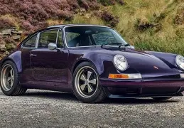

Cars
BMW M4
The BMW M4 is a high-performance version of the BMW 4 Series automobile developed by BMW's motorsport division, BMW M GmbH, that has been built since 2014. As part of the renumbering that splits the coupé and convertible variants of the 3 Series into the 4 Series, the M4 replaced those variants of the BMW M3. Upgrades over the standard BMW 4 Series include an upgraded engine, suspension, exhaust system, brakes and weight reduction measures including increased use of carbon fiber, such as on the roof of the car, and the door cards.The M4 also had a Competition Sport Lightweight (CSL) version that was 100kg lighter than the standard M4

Porsche 964
The Porsche 964 is a model of the Porsche 911 sports car manufactured and sold between 1989 and 1994. Designed by Benjamin Dimson through January 1986, it featured significant styling revisions over previous 911 models, most prominently the more integrated bumpers. It was the first car to be offered with Porsche's Tiptronic automatic transmission and all-wheel drive as options
.
Mercedes-AMG GT
The Mercedes-AMG GT a series of 2-door sports cars produced by German automobile manufacturer Mercedes-AMG. The car was introduced on 9 September 2014 and was officially unveiled to the public in October 2014 at the Paris Motor Show.[1] While not directly replacing the SLS AMG (competing in a different segment), it is the second sports car developed entirely in-house by Mercedes-AMG. The Mercedes-AMG GT went on sale in two variants (GT and GT S) in March 2015, while a GT3 racing variant of the car was introduced in 2015. A high performance variant called the GT R was introduced in 2016. A GT4 racing variant, targeted at semi-professional drivers and based on the GT R variant, was introduced in 2017. In 2021, a new variant called the AMG GT Black Series was released. All variants are assembled at the Mercedes-Benz plant in Sindelfingen, Germany.
| Brand | Model | Country |
|---|---|---|
| BMW | M4 | Germany |
| Porsche | 911(964) | Germany |
| Mercedes | AMG GT | Germany |
it to make a type specimen book. It has survived not only five centuries, but also the leap i
sometimes by accident, sometimes on purpose (injected humour and the like).
injected humour, or non-characteristic words etc.